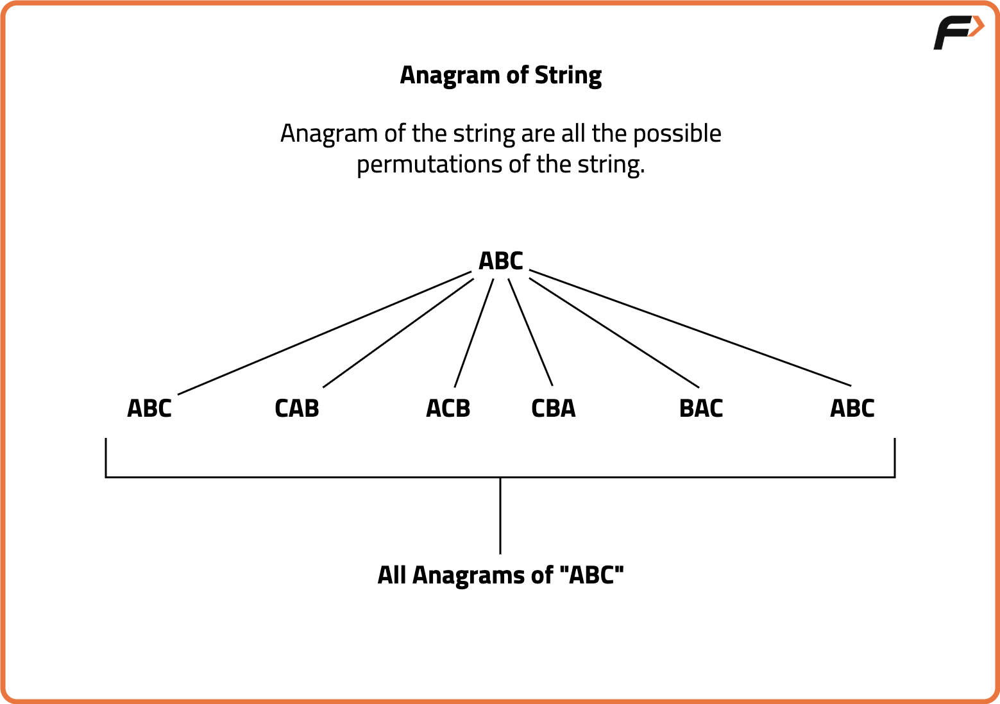

Check if two Strings are anagrams of each other
Problem Statement: Given two strings, check if two strings are anagrams of each other or not.

Examples
Example 1:
Input: CAT, ACT
Output: true
Explanation: Since the count of every letter of both strings are equal.
Example 2:
Input: RULES, LESRT
Output: false
Explanation: Since the count of U and T is not equal in both strings.
Disclaimer: Here is the practice link to help you assess your knowledge better. It's highly recommend trying to solve it before looking at the solution.
Brute Force Approach
Algorithm
- First, check if the lengths of both strings are equal. If not, they can't be anagrams and return false immediately.
- If the lengths match, sort both strings using a built-in sorting algorithm.
- Once sorted, iterate through each character of both strings and compare them one by one.
- If any character mismatch is found, return false.
- If all characters match, return true, confirming that the strings are anagrams.
Code
#include <bits/stdc++.h>
using namespace std;
// Function to check if two strings are anagrams
bool CheckAnagrams(string str1, string str2) {
// Case 1: when both of the strings have different lengths
if (str1.length() != str2.length()) {
return false; // Strings can't be anagrams if lengths are different
}
// Sort both strings
sort(str1.begin(), str1.end());
sort(str2.begin(), str2.end());
// Case 2: check if every character of str1 and str2 matches with each other
for (int i = 0; i < str1.length(); i++) {
if (str1[i] != str2[i]) {
return false; // If any character doesn't match, they aren't anagrams
}
}
return true; // Strings are anagrams
}
int main() {
// Example strings to check if they are anagrams
string Str1 = "INTEGER";
string Str2 = "TEGERNI";
// Check if the strings are anagrams and output the result
if (CheckAnagrams(Str1, Str2)) {
cout << "True" << endl; // Output "True" if they are anagrams
} else {
cout << "False" << endl; // Output "False" if they aren't anagrams
}
return 0;
}
Complexity Analysis
Time Complexity: O(N log N), where N is the length of the strings. This is due to the sorting step performed on both strings.
Space Complexity: O(1), as the sorting is done in-place and no extra space proportional to input size is used (excluding the input strings themselves).
Optimal Approach
Algorithm
- First, check if the lengths of both strings are equal. If not, return false immediately as they cannot be anagrams.
- Initialize a frequency array of size 26 (for all uppercase English letters) and set all elements to 0.
- Traverse the first string and increment the frequency of each character.
- Traverse the second string and decrement the frequency of each character.
- Finally, check if all elements in the frequency array are zero. If any element is not zero, return false as the characters do not match in frequency.
- If all frequencies are zero, the strings are anagrams and the function returns true.
Code
#include <bits/stdc++.h>
using namespace std;
// Function to check if two strings are anagrams
bool CheckAnagrams(string str1, string str2) {
// Case: when both of the strings have different lengths
if (str1.length() != str2.length())
return false;
// Initialize a frequency array to store character counts
int freq[26] = {0};
// Count frequency of each character in str1
for (int i = 0; i < str1.length(); i++) {
freq[str1[i] - 'A']++; // Increment frequency for each character in str1
}
// Decrement frequency for each character in str2
for (int i = 0; i < str2.length(); i++) {
freq[str2[i] - 'A']--; // Decrement frequency for each character in str2
}
// Check if all frequencies are zero, meaning both strings have the same characters
for (int i = 0; i < 26; i++) {
if (freq[i] != 0) // If any frequency is non-zero, they are not anagrams
return false;
}
return true; // The strings are anagrams
}
int main() {
string Str1 = "INTEGER";
string Str2 = "TEGERNI";
// Check if the strings are anagrams and output the result
if (CheckAnagrams(Str1, Str2))
cout << "True" << endl; // Output "True" if they are anagrams
else
cout << "False" << endl; // Output "False" if they aren't anagrams
return 0;
}
Complexity Analysis
Time Complexity: O(N), where N is the length of the strings. Each string is traversed once, and the frequency array is checked in constant time (26 iterations).
Space Complexity: O(1), as a fixed-size array of 26 elements is used regardless of the input size.